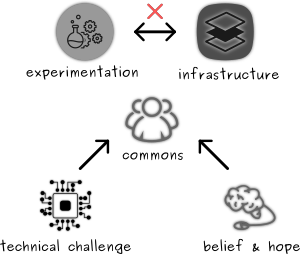
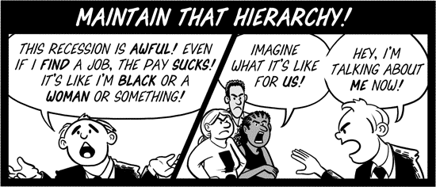

Some of you might find it strange and even anti-establishment, while the reality
being - they are the one that we mostly depend on, atleast for now. I write this
with a hope of igniting alternative thought process which might inturn inspire
one to question about the current status of communication systems infrastructure.
Communication need not be a commodity, need not be a resource for profitability, but it is a necessity !
HISTORY & REASON
Every innovation and change in the realm of communciation and communication networks were mostly contributed by the
commons. Furthermore, commons are the information generators and the information aggreagators, information absorbers,
which provide the impetus to create new technologies and tools that enable to share the information among others in
a easy and economic way. Internet is one great such collaborative effort such that its completeness is always greater
than the sum of its constituents. It evolves continuously and in turn influences people to create change. It is one
large entropy field. All that is enabled by the availability of fundamental physical connection infrastructure.
Learning about the history of communication systems is itself a separate fielf of study, where the drive for expression,
has made us innovate newer and newer forms of language, which in turn reinforced the drive to innovate newer forms
of communication methods constantly over time, along with our non-linear behavior, which in turn influed the history
of technology itself. Communication systems and the infrastructures always have been one single common fabric which
we humans have always stood upon. I think the following video might help you observe, how it is intertwined & evolved
along with us :
Many wonder why the hell the current internet structure looks so familiar with the biological networks like brain's
neural architecture, fungus, etc... Furthermore, who invented internet at first place. The fact is no one !.
That made it eligible to be a single most marvellous common's land and infrastructure, where nobody have any monopoly
over the structure itself. For those who want to learn about it... i think the following videos might help you.
:D Learn internet's
history.
Commons create modern day cave paintings and express as comics, with its own grammar and awesomeness. Artists, create
their content and share it in Web from which they gain more social following than ever marketing industry could offer.
Commons are the one maintaining the following properties of Internet to this day :
Equality through information Neutrality → net neutrality
Freedom of expression
Sharing
Reliable & Durable Communication
If you have read my post on infrastructure
then it might be possible to understand the significance of infrastructures from both individual and social perspective.
When the commons own the infrastructure, through collaborative contribution, the system seems to emerge itself organically
and stabilizes itself through flexible adaptive process and grow further that extends the network. It is this very
idea that influenenced commons to adapt similar set of principles to apply to maintain the natural resources as a cultural
infrastructure, rather than a synthetic industrial resource. But such commons contribution seems to be relatively lacking
in influencing the underlying physical infrastructure, because of technical limitations and absence of proper economic
incentives. This provide a great symbiotic relationship with the system, to deliberate on the principles, engineer new technical
proposals, observe transparency & neutrality, create tools and technology very effectively.
Major powers in the real world merely reduced to just a webpage, among billions of websites out there, and further could not
able to effectively use consent manufacturing strategy as a weapon against democratic action when people roar with
criticisms and pressures to invoke change in the real world. This at least in principle eradicates power asymmetry.
Critical pressure on establishment is now possible through open critic & humour
Even with current structure of internet, we could see massive people uprise and non-violent protests, which have proved its
effectiveness, through online campaigns signing & emailing; access to potential information & proves which cannot be denied;
sharing of critical information for awareness, propagating discussions, video conversations, humours, memes, which actually
takes control of the public opinion of those who are all connected to the internet via its one of its web platforms - even
when centralized. With constant raise in public opinion, soon the state has to respond - (party driven by social & political
pressure) to meet what the people need with critical deliberation.
WHAT IS COMMUNICATION ?
A phenomena that enables us to share resources, information, opinion, suggestion, content, with each other
when we think we want to with very minimal effort and inertia. Every human civilization, have encountered
problems in communication, and many have found a method that suit their needs. Communication is not just a
system, but it is a Complex Networked system.
Fundamentally, Communication is an abstract term that help us denote the phenomenon of information sharing.
Thus the number of participants in the communication is just one part of the phenomena. The concept of
communication is not going to change in general whether it is just 2 friends discussing criticially about
an issue in the local park or it is a parliamentary deliberation making laws and amending consititution, or
it can be a written letter, tele-fax, tele-phone conversation, broadcasting, amateur radio participation,
internet messaging, emailing, etc.... When information is exchanged between the participants based on an
agreed rules/protocols then communication is happening.
Communication helps us express our intentions
Communication is the first form of democratic participation
Communication provides us the medium for expression & participation
Communication is reinforced by technology that constantly adapts to change
Communication is based on information and in turn it influences information exchange
WHAT'S THE NETWORK THING ?
Communication always depends and adapts to technological change. It is one of the foremost scientific & engineering
discipline that encourages radical innovations. From Cave drawings to Internet, this has been the driving force
behind our curiosity to explore whether every form of technology to be used a communication tool or not. Languages
are the base rock of communication. It determines the rules/protocols, & our thought process too ! Apart from that
communication is a networked system made up of many sub systems that are usually connected with proper interfaces
to provide mediums, & tools.
The Network is the underlying physical infrastructure, that forms the basis to implement the mechanisms &
policies, that we use as the platform to communicate. And abstract Networks can also be formed upon the communication
services. In other words, Physical connections form the Internet (network of networks), and above that we have emerged
a web layer that helped us think about innovative ways to share resources and information with each other
more or less in a flat fashion. Atleast, that is how the inception of Internet envisoned it to be.
Construction of physical infrastructure, provides the necessary connections that are required to enable
and establish a reliable communication. These connections and their topology form the fabric of Netowrk itself.
Abstract networks that are formed on top of web, undergo a lot of innovation and thus lot of changes are adapted
as soon as as they are made. Delay between creating a communication tool and using it is reducing to infinitesimal
value day by day, because of the nature of collaborative authorship of projects. There is always some social mass
associated with such projects which adopt earlier to it and further propagate its usage in web.
Such, innovation to usage collaboration is not technically easier to undergo in the physical infrastructure of the
internet. The infrastructure is so rigid, such that it supports the rapidly varying flexibile social networks
residing on top of the internet whose fundamental behavior rooted in the design of the physical infrastructures
connection and topology. Thus when a change is required in the infrastructure, we face with the following problems:
Social Mobilization
Changing current infrastructure is not economic
Services tied with it cannot abruptly modify its design without affecting users
Epiphany striked for DAS, who studies social engineering and have decided to start a social networking company in
India, where anybody can join and do the similar stuff all other current day centralized social networks offer. It is
not a new idea, but its tailor made cool UI and features specific for students, artists, researchers, homemakers,
elders, ... were added in order to spend more time in it. DAS knows that such a system requires loooooooot of data
and it cannot be demanded, he has to streamline his internal action plan as follows :
Bootstrap:
Find a rich & dumb funder
Create a gorgeous website
Popularize it with early adopters
Gain Social momentum:
Provide freebies to attract more
Track the number of user registration
Scale along:
Migrate to techology stack
Log users information [ more information → better service ]
Provide better security for servers
Learn & Capitalize:
Analyze, and learn from information
Extract connections
Provide better targeted service
Gain social capital
Transform gain to financial & economic capital
DAS's plan
DAS decides to practice/emulate this action plan to observe how it might go even with a smaller/feeble user
base. One fine day in his hostel dormitory, decided to test this, using his own laptop, local network as the
initial resource. He convinced his friends to join the network. Everything is free of money. His service coverage
reached his department students within few days, and people started to converse through the service, which
rapidly gained momentum and made the resources halt because of their technical limitations.
DAS decides to convince some of his geeky friends in all other departments, to share the service instance, so
that the load can now be distributed. After a week or so, the influx of students, professors, and others
access for the service seems to be overwhelming. Now, DAS raises the demand to fund him, in order to scale up
the service. People who find it most attractive become the initial funders, and with that he could run the
service better with better hardware stack, for instance more storage and memory.
The no. of users seems not to stop, and nowhere drops. With increase in the rate of registration - filled by
new incoming students to the university and substantial no. of users after finishing their degrees are still
connected. This pushes DAS to further increase the capacity by demanding more capital funding to raise the
resource by orders of magnitude.
DAS soon realized that there is a potential loooooopy thing going on here and its pattern can be deduced earlier
and thus can be solved by projecting the trajectory making the service virtually endless, with constant
update of technological resources & technology itself that suits centralized services.
Logging meta information of service, as well as users will help improve the service for better & moreover
projects the service as some form of endless resource to the user - that can potentially drive them to
log their personal datas, files, resources for better reliability and backup. Furthermore, some users
might use the resources provided by the service as the facilitator for his/her requirement. Thus, providing
reliable service or abstracting by simulating reliability by obscuring hard and dirty jobs behind the user
interface of the service will tie them to the service.
This mechanism, always increases the social capital capacity influx & the mechanism is only regulated by the
policy guidelines which itself could be changed at any point of time as the owner - DAS sees it fit !
When a conflict occurs between the users or between the user and the authority whom DAS has signed a contract/
agreement, that abides the constitution and governance of the university, the final decision and action completely
depends upon the DAS's discretion. Whooooooooooa ! complete control. Why ? with so much social capital derived
from the users through complete psychological dependency, any authority would not even try to restrict the growth
of the service. Furthermore, when the service is completely run by the capital invested by the users, DAS, would
have to just go check the policy, which everybody agreed and take so and so action ! remember: the policy
itself, can be changed with time as per owner/investors/funders wish.
Eventhough internet, has emerged out of commons contribution, the very nature of it has not provided mechanisms to restrict
the influx of systems, infrastructures & services that are already flawed in the real world. In fact, they are the ones that
inspired people to think alternatively and create internet in the first place. With such diverse mix, internet was at some
point of time has been recognized as potential space for business and commerce apart from free souls, hipsters, hackers
wandering around writing and hosting their websites, experimenting it with to learn networking, computing sciences. By this
time still penetration of internet is not much deeper than it is today. With more and more percolation, accelerated by the
academic research, and business spaces, world wide web has become a real space for gaining social capital that really
engaged online business systems. This has made internet very popular and allowed several governments to embrace internet, to
provide the necessary fundamental infrastructure to their countries.
With ever growing social base, Web, became the fertile ground for centralized ecosystems to enable the users of internet with
information services, with which data/information became the new commodity for e-commerce & e-business systems. This continues
still today ! Even we commons find that collaboration seems to much easier when it happens in a commonly addressable location.
Yeah !. Today almost all human collaboration projects are mostly central in functionality if not in topology and architecture.
There are two problems i see, to be potentially addressed :
Lack of experimentation by commons over the infrastructure
Lack of clarity in understanding Centralization & Hierarchy
With almost all real world services, which can be represented using information have been now mobilized towards web based
technology that runs over internet using centralized infrasturctures that connect to the underlying physical topology of the
internet itself. Furthermore, Initial technical challenges has led topology of internet to be hierarchical and establish
them through cables (still most % of internet is still based on guided medium). Thus the above listed two problems can be
seen as a emergent situation based of the following:
Technological challenges in Physical networking
Huge belief in Centralized business models

Problems that underlie the lack of understanding and experimentation
To understand how centralization and hierarchy usage does deeply affect the commons thought process, one has to understand
both its advantages and limitations. The current internet structure is lot skewed from its intended trajectory. But the
current structure also teaches us how not a network be synthesized. In other words, internet is filled with synthesized
fabric, instead of symbiotic emergent topologies. The establishment of e-business, e-commerce, online payment & banking
systems have reinforced the significance of centralization and hierarchy and has already reached people more than ever along
with internet.
It is the effect that we experience through the services and problems we face with it. Centralization in
topology is so popular because of its control ability that allows administration and management tasks to be completed
with ease. The problem is internet as envisoned by the commons is actually against licensing, administration, centralized
control, filtering, surveillance, and so on... With centralization, identification & control becomes easier which made
the services built with it under a single point of administration.
However, presently, most of the services once popular undergo a series of decentralization process - but only for
redundancy & cooking reliability. This does not make the whole infrastructure decentralized or federated. No control
is provided to the user. Still the same Server & Client communication is handled. All that the current structure does
is to shift their servers to locations to improve localized service, redundancy, backup strength, better service rechability
etc... This ensures the continued ease of maintenance and administration while giving control to the establishment that
constructs the infrastructure. Decentralization for better service, presence, competing for social capital, conquering minds
through emotional ads & providing attractive reliable service - does not mean dissolving centralized depdnency & authority.
...we have inspectors of inspectors and people making instruments for inspectors to inspect inspectors...
- Buckminster Fuller
At best we could only see decentralization as a transition strategy, to shift to a new way of organized society.
Centralization at the top level or at the bottom level, leave us with only with establishment of hierarchy of power
and control over others. Ultimately Centralization will go hand in hand with Hierarchy for those who desires to line
their pockets with profits and power - all in good intention of course.
Mutates Intention & Ends with Irreversible Complications
Every business and entrepreneurship intention need not be profit motive, and when there are ones that can care about other
stuff that matters instead on profit alone - good intentions seems not enough for desired social progression. Most of the
present day Information based business empires that rely heavily on Communication Networks, Internet, & Web will promulgate
some sort of good intention out of their centralization effort. But it is a well known fact, that good intentions alone
shall not take to the place we desired to go. How we attain the goal is also a much more vital factor. Reaching the goal
somehow through any means possible are the characteristics of desperate lunatics and has a indirect sociopath behavior. Such
desires and business and economic structures constructed out of it have to mutate people to stay ignorant, to not dissent,
to just follow, to trust and believe in somebody, etc. Such systems also does not have a socio-economic transition plan that
is democratic. All the transition they bring in the name of disruption, is a preambulating tactic with peoples as
honest begging consumers in it. But all that is for reaching the "rational, wonderful, greater good intention".
Thinking abount it one can see, it not only subjugates people in variety of forms, but also pressures the centralization
authority to ask consent from every individual whenever a request or task associated with the individual subscribed to the
system is queried. This adds burden to the authority to keep track of consent as proof of communication. This cascades the
necessity to further crave for centrally controlled identification & tracking systems. Centralization for access through
transfer of responsibility manifests as power, involves transfer of liberty too. Such actions most of the times end up with
irreversible complications and socio-economic injustices which human history has a good track record. Ends with universal
sufferage but begins with good intentions, & we know it struggled to attain that good intention. What a waste.
Hierarchy is a informational & mathematical structure that helped us to organize information and memory. It is so basic
that without such interpretation of classification & grouping of information, knowledge organization would become
so hard to manage. Usually centralized architectures, and thus the infrastructures following it use the hierarchical
management strategy, because of its efficiency. When the services becomes large scalability is a vital issue
which is so far solved with hierarchy and centralization.
So, hierarchy can be seen wherever we try to classify things for clarity and to study about the behavior of a phenomenon.
Its purpose best suits for that. But when we have inequality and with all good intentions to end it by utilizing all
liberal systems have resulted only in seriously limited solutions - if at all they work in relaity. It comes to a position
where solutions that have hierarchical implementation that creeped inherent differences as layers of job/duty in an organization,
solicited by labour skill working together to solve a social problem -- are ending up with only scratching their backs
by attaining only a moral satisfaction without ever solving the problem in reality. One shall have a satisfaction that they
have done something towards addressing the problem which gaurds them from future criticism. A hierarchical model which inherently
follows hierarchical power and communication relations, manifestation of non-cooperative principles, will not able to understand
the problem in first place.
Maitaining Hierarchy while addressing the problem ?
Using Hierarchy only where, why & when necessary, seriously need to be relearned in society. It is important because when
we see a easier construct to organize ourselves we tempt to deploy it in all places regardless of their mismatch. When such
habit becomes a defacto model, then as a soceity we become homogenous in organizing ourselves. Such actions indoctrinate
motivational reasoning to learners and teachers that further precedents anyone to use the same models in business, politics,
policy making, resource management, economics... etc.,.
When business systems that religiously followed the centralized, hierarchical models with primary motive of profit
started visualizing internet as a medium of business transaction and market place to exchange commodities, the real
utility of internet started undergoing a change that encouraged other business to shift their operations that dealt
with information process bind with internet. This is not only economic, but also help spread the business further
forming a near ideal situation for market competition.
By late 1990's and 2000's innovation of information technology and the availability of ever expanding fundamental
global network infrastructure through under sea optical fibre cables, satellites, microwave stations,... business
investment ascended with rich venture capital fueled startups that started providing services which essentially
depends on the information from their clients. Since these startups were keen in making products and services that
connect them directly to the public, a huge spike in their revenue model is witnessed.
: Normated Bifurcation between User, Appliance & Service
This model has essentially supplied people with lost cost or almost free of money services, social
networks, communication gadgets, etc. To make the services more reliable technically more data and information
processing power is required. To collect data, the consumer has to be persuaded or mandated softly to supply the
data required to the service infrastructure. Most of the time these services are of closed nature, and nobody had
the slightest idea of how they do of what they do. The problem in simple terms could be understood by interpreting
the above diagram. The business incentives cries to actually construct centralized hierarchical companies and
startups with :
Huge Computational Infrastructure
Utilizing Internet to communicate with the information appliances (gadgets like smart phones)
Deploy applications that enables user only to interact with the service
Deploy systems and applications that constantly use consumers as targeted advertisment consumers
Seperate the consumers from the service as much as possible
This essentially made people Online Savvy, that established a normative climate of commodity fetishism
in Internet. This further created repurcussions in real economy, as marketing campaigns persuades people to use
internet for everything they would imagine of. As users, we welcome new technology and here we like to keep our
devices in close proximity, while really we are bifurcated from the actual application that we depdent very much on,
where the distance "a" keep on shrinking, "b" expanding ever. This contradictional deployment
of applications that one hand ties itself up closely with the user through innovative User Internation design, while
on the whole dependent upon the centralized services - becomes useless without communication - internet. This climate
has obscured the actual huge cost of information logistics, that comes with this. It costs :
Centralized - huge computing infrastructure
More Electrical Power
More Storage devices
More maintenance
User - Service depdency lockin
Spend money for ISP, Telecom operators
Compromise on informational privacy
Bear the annoying popup ads.
Neglection of critical analysis
Who decides the utility has to be online dependent ?
How it is decided to design an application as online service ?
We could have so far atleast got the idea of how bifurcation of gadgets from the services have lead to a
internet that is hard handled to fill it with such business models - ending up in homogeneity of structures
that again precedents as "successful" business models and formulas. This might end up creeping internet more
of a market place for business ventures than as a mutual sharing platform for the commons. The
internet as communication infrastructure and with its web of network, has the potential to emerge as platform
of social stage - which again is hindered and impeded by the rise of centralized social networking services
like facebook, google, twitter...
: Synthesis of Consumer base : [ social capital ] = Product [ info. appliance ] + Service
People who is mostly ignorant about internt and web, has already been suffering from several compromises.
We have already become so much dependent upon these centralized services, for a number of reasons:
ease of usage and interaction (actually addictive)
single entry point
belief in 24x7 assured availability
belief in service accountability
ignorance of terms of services & its dynamic
ignorance of compromises in informational privacy
psychological training of ignoring advertisements
once networked in a group, social desire resists to leave the centralized platform
believing that alternative approaches are not easy to use without even trying it
The way this dependecy as illustrated in the above digram is pretty interesting. The business models that
emerge with such mechanisms always ends up in expanding the degree of dependency for both the consumers
and the business people itself. It is both advantageous for both of them at the same time detrimental
to both of them beyond measurement. Both the consumers and service providers become highly dependent on
each other for their profit motives. This dependency fuels the Data/Information Market Economy [DIME]
that makes data as valuable as Oil. Since data here represents the data generated from the consumers, it is
going to be continuously available for eternity as long as one can get a gadget acting as a data
acquisition device. There is no surprise our measures of economy really shifted to Purchasing
Power Parity [PPP].
All present day Inforamtion Appliances - like smart phones, smart watches, smart inner wears, smart x, smart y, etc..
have in one or other way have persuaded us to become dependent on some centralized massive services that is
reliable. We want to believe that it is reliable because the infrastructure is huge and complex. When one is
persuaded to use an application, then it comes easier mostly in internet to spread the word and thus companies
offer their products and services with free of money - which reduces the users impedance to try it. There are no
failure of products here. People criticize and the product will always be made if sufficient number of consumers wants
it. One way or the other, we depend on it, we become addictive and then we make others depend on it and drag them
to become addicts. It becomes addiction, when we cannot able to live without the gadget or the service.
: Business model that depends by perpetuating actors : U - User/Consumer; IA - Information Appliance; Ser - Service
This illustration shows how the present business models help perpetuate the dependency which ultimately ends
much profitable for them. It is remarkable to interpret how this mechanism works atleast in theory. Since the
models mostly works in digital and informational realm, it will most likely work as it would work in a idealized
situation. The Users "U", when come to know about an application, then would provide the data
back to the service, and spread the information to the social network group. Some of the group members, might
able to try it and become users of the application again, in turn will supply the data back to the service and
would recommend the application to other social network group with they are part of. This information diffusion
repeatedly reinforces the market transaction of data and more popularization of product, without necessitating
any financial complexities that might have demanded huge marketing campaign.
As Subscription becomes richer and richer with information diffusion, the importance of Sales
of IA becomes accelerated in market. Since advertisement have become targeted with the gadgets, and information
spreads through the centralized social networks which the business is in control of, people are actually playing with their
shoes, their ball, their stick, in their field, with their rules. It always ends profitable to them. The only profit
we would enjoy is mental satisfaction, group addiction while we spending for ISP cost, private Information, Data
required for computation.
For every social & democratic uprise and action, communication is vital. If we let communication in the hands of a few,
then we are literally handing over our freedom & liberty to a few, who have systems that can only churn profits and
comfort out of it. If we do that, we are going to be the best ever slaves in the history !
In conventional governance, there are institutions which are centralized but are funded by the public where the
institution is funded by the people through the governance structure (via legislature and bureaucracy). When
the institution is answerable to the people, the channels of communication are laid by protocols and rules
which actually does not fit todays expctation and often feel so dumb, even when there are proper reasons behind
it. Here the infrastructures are governed by the state. Usually public funding happens through state funding and
by taxes imposed on people, right ?
Who owns in "public funding", what participation does people have ?
With commons, the approach is more symbiotic, where the owner ship is not based on funding alone, but through
cooperative and participatory actions like contribution, design, implementation, documentaiton & management in a
collaborative way. This provides a common platform where nobody can own anything in particular apart from their part of
their contribution. Thus the interdependency to implement something for practical usage demands collaboration,
where peer produced ideas, products are brought together and collaboratively connected to setup a ecosystem,
through which the economy emerges. However, this requires large social density to get started and the communities
usually struggles until the participation reaches a inflection point. Most of the cultures seems to have used
this approach as a reliable sustainable model. Economic ecosystems derived based on such cultures seems to self sustain
than the current centralized models.
Who participates, shares & owns commons-collaborative ecosystem ?
Do we own the data we generated ? Why do we give it away by spending money from our pockets ? Why do we always
depend on someservice that we hope to compute on our data ? Why are we not collaborating among ourselves - atlease
in computing communities to construct platforms ? Why is not there an economic incentive in our society when
we come up with such alternative platforms ? Why people want to own stuff of others ?
If platforms are owned by centralized services which we access, then data processed by such platforms do become
theirs by deault ? What good of a privacy policy when mechanisms of implementation does not actually support the
moral behind the policy ?
: Business model that locks User - a.k.a maintaining user base with Services & Targeted Advertisements
Yes, with more data and information compiled about a individual, the more and better the service can become. But how
the data is collected ?, with what mechanism ? and why so ? : are real questions that we must dare to ask ourselves in an
economy and society where digital information is becoming a non-optional variable. As soon as one realizes that
bifurcation of user, application; dependency perpetuation decides the business climate in internet it will
be clear to see how people are really spending their financial potential, that acutally supports such digital economy
in first place. The whole narrative is always about how to make people spend whatever they are trying to save. The above
illustration shows how the business systems run themselves by deploying mere non-democratic mechanisms and tactics,
for lack of practicing and support of any alternative strategies.
This is a dependency where one falls prey to another, but both falls prey for common construct. This is a lockin situation
which both suffers within the perpetual dependency loop. Both cannot leave the other as their sustenance becomes dependent
on each others presence 24 x 7 x 365. It is both ignorance potential and intellectual potential that plays synthetically to
construct this lockin perpetual. It is usually the people who suffers from it actually dissent it and take courageous action.
Moreover, the loop makes every function a creep function. The original definition no longer holds in this realm.
There is one prescription to the overarching problems of communication infrastructure. Yet one can see that encouraging and educating about
social emergence of communication networks in general along with internet will help people realize the importance of individual participation
and peer to peer collaboration. We are already aware of many alternative socio-economic systems that provide theoretical and pragmatic
ideas to help construct platforms which can save and even help communities to self sustain through which commons infrastructure can be
constructed collaboratively. Information technology and Software communities kindled by the philosophy of Free Software Philosophies, and its
adaptation to other fields wherever information is becoming vital for a open, transparent, and collaborative platforms rather than a highly
centralized, hierarchical, punistic/dominating structure.
: Collaborative Social Emergence utilizing Open Systems would be the right way forward
As shown in this illustration one can atleast able to see, that peer production help change the means of production. Individuals no more
use computers as just computing platforms but as instruments that potentially could create constructive changes. As computing is
becoming more and more democratized and usable the underpinning information processing, programming software logics also do become democratized
which comes to commons readily that allows modification, propagation and sharing that was not possible earlier. Surrounding such
technological ecosystem, recent decades see a sensitive change in the innovation of alternative economic systems that help people to
concentrate more on what they are passionate about, relieving them from conventional job cycles. This makes them more productive
socially.
You can invent one great device and change the world, or you can invent a great instrument which can give birth to thousands of devices!
With commons based peer production, sharing of designs, logics, procedures, (things can be encoded as digital data) sharing itself
is now percieved at a new level and scale. We now have the possibility of constructing healthier social platforms that can able to
cooperate with other present economic systems. The Open systems and Peer production climate is one of the best example how social
emergence in domain will be copied, customized and adapted to other domain. Such emergency is not limited to information technology
alone and it has far more fields than ever imagined. This is a perfect situation where information and network help each other in a
symbiotic way rather than a perpetuating way.


 : Normated Bifurcation between User, Appliance & Service
: Normated Bifurcation between User, Appliance & Service